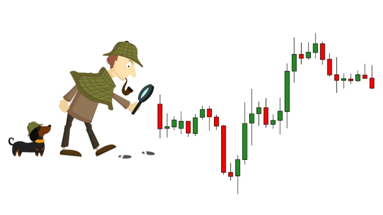
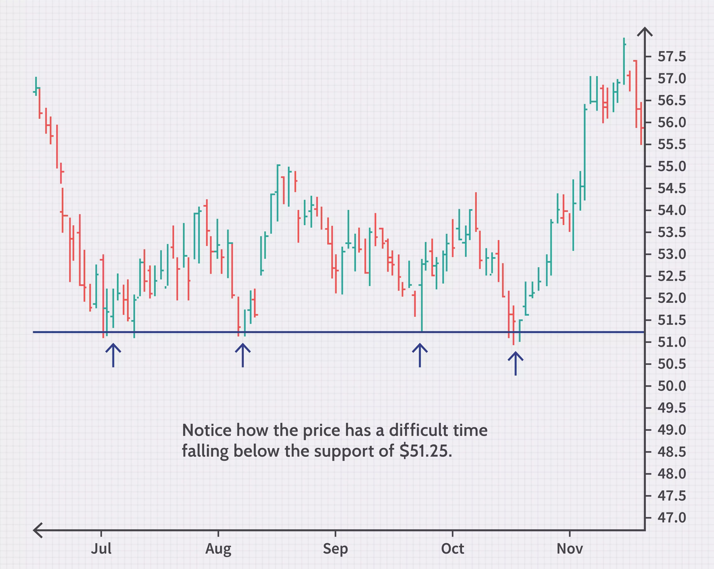
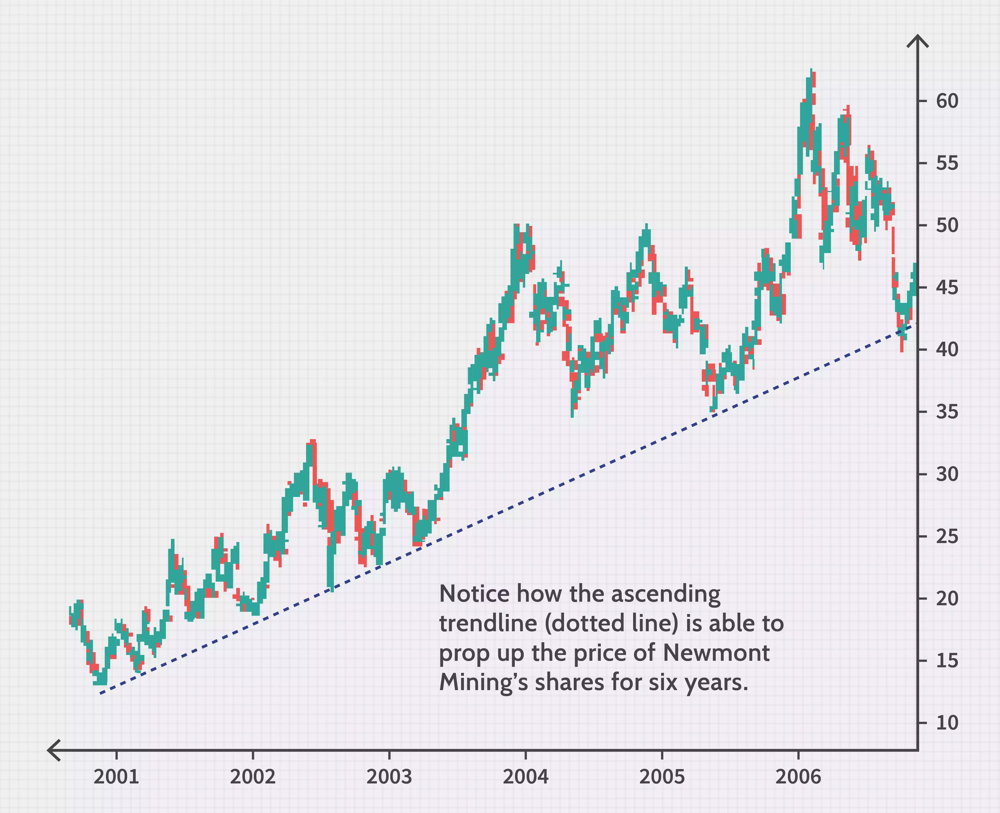
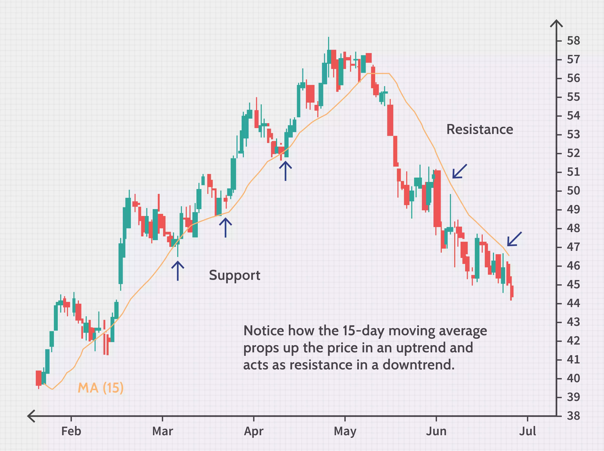

The Best Indicator Used And Suggested by Top Traders Is "PRICE ACTION"

#1 Support
Support, or a support level, refers to the price level that an asset does not fall below for period of time. An asset's support level is created by buyers entering the market whenever the asset dips to a lower price.

#3 Trend
A trendline is a line drawn over pivot highs or under pivot lows to show the prevailing direction of price. Trendlines are a visual representation of support and resistance in any time frame. They show direction and speed of price, and also describe patterns during periods of price contraction.

#4 Moving Average
In statistics, a moving average is a calculation used to analyze data points by creating a series of averages of different subsets of the full data set. In finance, a moving average (MA) is a stock indicator that is commonly used in technical analysis. The reason for calculating the moving average of a stock is to help smooth out the price data by creating a constantly updated average price.